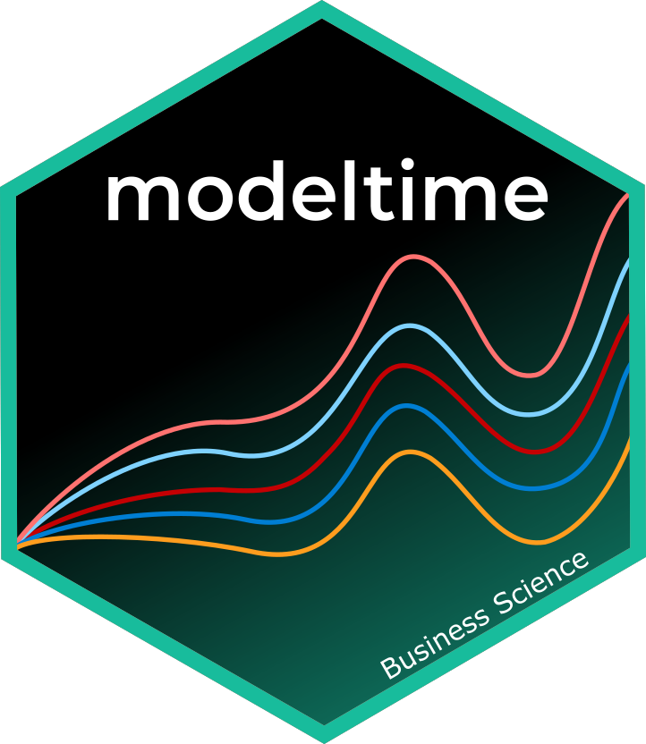

Project Overview: Discovering State of Economic in Singapore with Nowcasting Methods

Overview
In the economic landscape of Singapore, a nation renowned for its vibrant trade, finance, and innovation sectors, the ability to accurately forecast economic conditions is not just advantageous but essential. Traditional economic forecasting methods, while useful, often fall short in today’s rapidly evolving market environments. These methods typically rely on historical data that, by the time of analysis and publication, may no longer reflect current economic realities. This latency in traditional forecasting poses significant challenges for policymakers, businesses, and investors who rely on timely data to make critical decisions.
Motivation
The motivation behind our project stems from the urgent need for more immediate economic insights in the fast-paced economic environment of Singapore. The conventional approach to economic forecasting and analysis is no longer sufficient to meet the demands of a dynamic global economy, and the challenge of reducing the time lag in economic data analysis is non-trivial. It requires innovative methodologies that can accurately predict current economic conditions using incomplete or near-real-time data. This is where nowcasting comes into play, offering a promising solution by utilizing the latest available data to estimate present economic conditions.
The issues of data timeliness and the intricate nature of economic relationships within Singapore make this topic particularly challenging—and interesting—to solve.
The Data
The following datasets will be sourced from the CEIC: Global Economic Data, Indicators, Charts, and Forecastsand Department of Statistics Singapore. We will extract the following GDP Growth Rate, Export and Import, Retail Sales Value and Food and Beverage Sales Value in Singapore:
Singapore: GDP Growth Rate
This dataset contains information on Singapore’s Gross Domestic Product (GDP) growth rate over a period of time. GDP growth rate measures the percentage increase in the value of goods and services produced by the economy. It is a key indicator of economic health, reflecting the nation’s overall economic performance and indicating trends such as expansion or recession.
The following is a snapshot of the GDPGrowth, which contains information about the GDP, Year on Year Growth Rate from Department of Statistics Singapore.

Singapore: Export and Import
This dataset is to include data on Singapore’s export and import activities. It could provide insights into the volume, value, and composition of goods and services exported from and imported into Singapore. Analysis of export and import data can shed light on the country’s trade dynamics, including its trade partners, major export and import sectors, and trade balances.
The following is a snapshot of the Export and Import, which contains information from CEIC: Global Economic Data, Indicators, Charts, and Forecasts.


Singapore: Retail Sales Value and Food and Beverage Sales Value
This dataset contains information on retail sales value, specifically focusing on the retail sector as well as food and beverage sales within Singapore. It likely includes data on sales volumes, revenues, and possibly other relevant metrics. Analysis of retail sales and food and beverage sales data can offer insights into consumer spending patterns, economic trends, and the performance of specific retail segments within Singapore’s economy.
The following is a snapshot of the Retail Sales Value and Food and Beverage Sales Value, which contains information from CEIC: Global Economic Data, Indicators, Charts, and Forecasts.


Approach
The dataset will be cleansed, processed, and transformed into a suitable format for visual analysis. This analysis will be performed using various R packages. The analysis will mainly focus on the following aspects:
Decomposing Time Series

Decomposing economic indicators into trend, seasonality, and noise reveals hidden patterns and trends, offering insights into cyclical and seasonal dynamics impacting Singapore’s economy. ACF and PACF analyses identify correlations at different time lags in time series data, aiding in selecting parameters for the ARIMA model to match the characteristics of economic indicators accurately.
Nowcasting with ARIMA, ETS, Prophet

Develop ARIMA, ETS and Prophet models for nowcasting Singapore’s economic conditions by optimizing parameters (d, p, q) through a data-driven iterative process. Aim for a model balancing complexity with predictive accuracy to capture economic dynamics and offer timely forecasts where we can make comparison for three different nowcasting methods.
R Shiny Application

This web platform offers historical and nowcasted economic data viewing and ARIMA model parameter experimentation. It features an intuitive UI, backend model integration, and interactive elements for parameter selection.
Timeline and Work Allocation
The scope of work (SOW) is a document that outlines the details and expectations of a project or a particular task within a project. It defines what needs to be accomplished, the resources required, the timeline for completion, and the criteria for success.
This Scope of Work document serves as a blueprint for the successful implementation of the Discovering State of Economic in Singapore with Nowcasting Methods: